Photogrammetry Tools
Scrivener Export - Reformatting Needed!
This article is an export of a Scrivener document. It will definitely need at least some reformatting to work in Obsidian and MkDocs. Delete this note once the article's formatting has been fixed to some extent.
Agisoft Metashape Deployment¶
Agisoft Metashape Deployment
Metashape is a popular Russian-made photogrammetry toolset that has cross-platform support for Windows, Linux, and macOS.
The Metashape standard edition is very affordable. The professional version adds video processing, GPS coordinates, more advanced control registration options, command-line support, Python scripting access, and render cluster option for using multiple computers to process more data. It is possible to create high-quality MVS (Multi-View Stereo) generated depthmaps using Metashape Pro and its Python scripting interface.
Note: The Agisoft Metashape software was previously known as Agisoft Photoscan prior to 2018.
Checking Metashape Command-Line Parameters¶
Checking Metashape Command-Line Parameters
If you need to check the current command-line parameters available in Metashape Pro, run the following code in the command-prompt:
"C:\Program Files\Agisoft\Metashape Pro\metashape.exe" --help
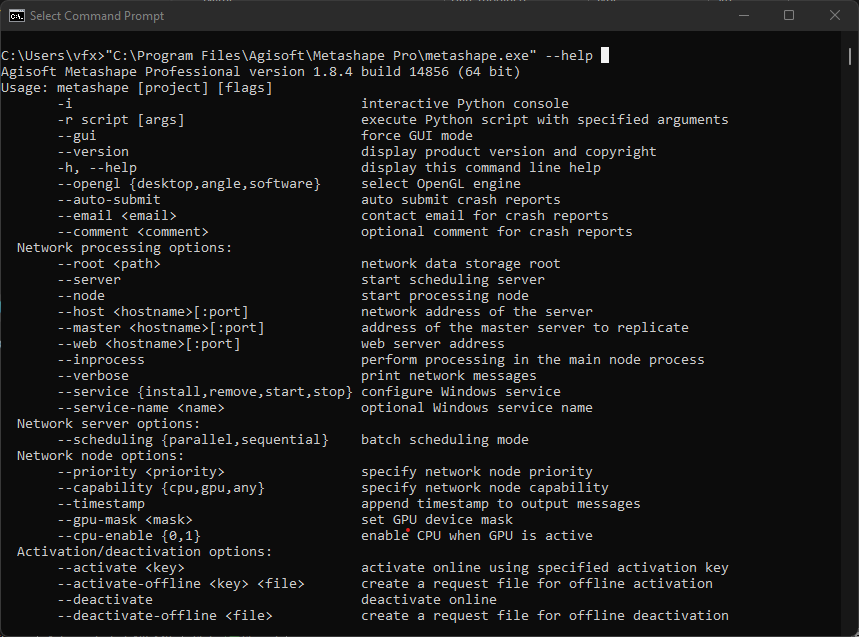
Setting up an AGI Metashape Pro Render Cluster¶
Setting up an AGI Metashape Pro Render Cluster
Let's enable network processing of data in Metashape Pro.
# Start a single server instance and make sure all storage is NFS or SMB based.
"C:\Program Files\Agisoft\Metashape Pro\metashape.exe" --server --control 10.20.30.1 --dispatch 10.20.30.1
# Start up cluster nodes
"C:\Program Files\Agisoft\Metashape Pro\metashape.exe" --node --dispatch 10.20.30.1
When you are in a Metashape Pro based GUI session, you should now enable the network processing option in the prefs.
Switch in the Metashape Preferences window to the "Network" tab. Make sure to type in the address of the server that is controlling the whole compute farm into the "Host name" field. In my case this is a system with the IP address of "10.20.30.1". If you are running the session on your own local computer you can stick with the default value of "127.0.0.1".
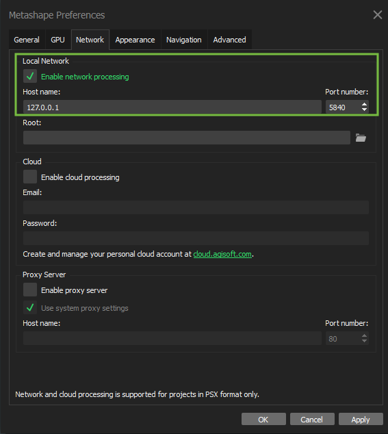
KartaVR Metashape Automation Script¶
KartaVR Metashape Automation Script
KartaVR provides a "Send to Photoscan" script that allows you to export Loader/Saver based media from a Fusion composite into a new Agisoft Metashape .psx project file.
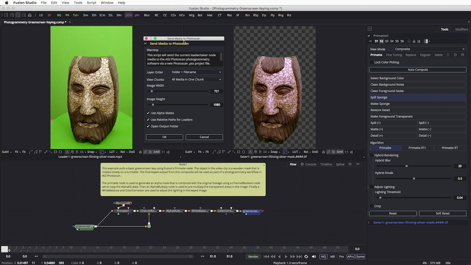
For More information
With this Lua script you can select as many loader and saver node clips as you want in the Fusion flow area and all of those images will be added to the same "chunk" in the new AGI Photoscan project.
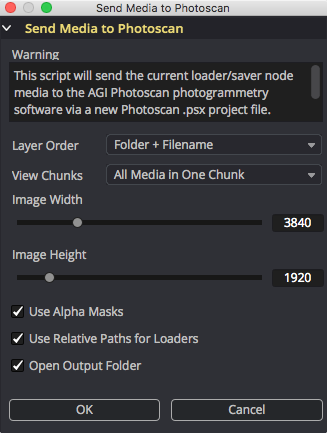
When a loader node with an image sequence is selected, the full frame range of the footage that is configured in the loader node will be sent to AGI Metashape as individual images. If a saver node is selected then an image sequence will be sent to AGI Metashape using the renderable start to end frame range values.
The standard edition of Agisoft Metashape only knows how to open up JPEG, TIFF, PNG, BMP, EXR, TGA, PGM, PBM, and DNG images.
If you have several video clips that you would like to use in Metashape standard edition then you should run that footage through the KartaVR Convert Movies to Image Sequences script first and it will process a folder full of movie files and output ready to use image sequences.
COLMAP¶
COLMAP
COLMAP is a cross-platform compatible open-source photogrammetry toolset. It creates point cloud and polygon mesh based outputs and supports command-line operation as well as having a GUI.
For More Information:
COLMAP is best known in recent times for being the command-line SfM based camera registration tool used by NVIDIA's InstantNGP toolset for NeRF based scene creation.
Reality Capture PPI Deployment¶
Reality Capture PPI Deployment
Reality Capture is a Windows based photogrammetry toolset that was acquired by Epic Games.
https://www.capturingreality.com/RealityCapture-PPI
Reality Capture heavily relies on a NVIDIA CUDA GPU to perform the multi-view image registration and alignment stages. Reality Capture supports the use of a Windows command-prompt based command-line interface for automation.
Reality Capture's best strength is being able to import and work with tens of thousands of images from a photogrammetry scanning project. You don't have to pre-filter the camera views to the same extent that other photogrammetry tools require.
Reality Capture scene export parameters can be saved into an XML based file format:
<ModelExport exportBinary="1" exportInfoFile="1" exportVertices="1" exportVertexColors="0"
exportVertexNormals="0" exportTriangles="1" exportTexturing="1" meshColor="4294967295"
tileType="0" exportTextureAlpha="0" exportToOneTexture="0" oneTextureMaxSide="16384"
oneTextureUsePow2TexSide="1" exportCoordinateSystemType="1" settingsAnchor="0 0 0"
settingsScalex="1" settingsScaley="1" settingsScalez="1" texturesFileType="png"
formatAndVersionUID="obj 000 " exportModelByParts="0" exportRandomPartColor="0"
exportCameras="0" exportCamerasAsModelPart="0" numberAsciiFormatting="%.16e">
<Header magic="5786949" version="1"/>
</ModelExport>
Scene cropping in Reality Capture can be saved to a .rcbox file that internally is an XML based file format:
<ReconstructionRegion globalCoordinateSystem="+proj=geocent +ellps=WGS84 +no_defs" globalCoordinateSystemName="local:1 - Euclidean"
isGeoreferenced="1" isLatLon="0" yawPitchRoll="0 -0 -0">
<widthHeightDepth>6.86994028091431 7.52994060516357 6.13969278335571</widthHeightDepth>
<Header magic="5395016" version="2"/>
<CentreEuclid>
<centre>-0.607471704483032 0.591201782226563 12.0405006408691</centre>
</CentreEuclid>
<Residual R="1 0 0 0 1 0 0 0 1" t="0 0 0" s="1"/>
</ReconstructionRegion>
When automating multi-view Reality Captureworkflows, it is helpful to know that the toolset is able to export each of the active camera locators to an XMP metadata format that includes both the transform matrix and lens distortion parameters. XMP data is internally stored in an XML based file format:
<x:xmpmeta xmlns:x="adobe:ns:meta/">
<rdf:RDF xmlns:rdf="http://www.w3.org/1999/02/22-rdf-syntax-ns#">
<rdf:Description xcr:Version="2" xcr:PosePrior="locked" xcr:ComponentId="{02FFA67D-FB37-48C9-AAAE-115D1A41F754}"
xcr:DistortionModel="division" xcr:DistortionCoeficients="-0.266409870680064 0 0 0 0 0"
xcr:FocalLength35mm="15.8017301481925" xcr:Skew="0" xcr:AspectRatio="1"
xcr:PrincipalPointU="0.00460590178527446" xcr:PrincipalPointV="-0.00856809553444162"
xcr:CalibrationPrior="locked" xcr:CalibrationGroup="-1" xcr:DistortionGroup="-1"
xcr:InTexturing="1" xcr:InColoring="0" xcr:InMeshing="1" xcr:latitude="179.984035152606480N"
xcr:longitude="33.770888658912980E" xcr:version="2.2.0.0" xcr:altitude="643119440/10000"
xmlns:xcr="http://www.capturingreality.com/ns/xcr/1.1#">
<xcr:Rotation>-0.134784620568843 0.851774231082322 -0.506274397261226 0.00661363302515503 -0.510152020736598 -0.860058821009682 -0.990852847761129 -0.119271014930193 0.0631273243627475</xcr:Rotation>
<xcr:Position>2.24050332940992 1.49823826996755 11.8964921935577</xcr:Position>
</rdf:Description>
</rdf:RDF>
</x:xmpmeta>
AliceVision Meshroom Deployment¶
AliceVision Meshroom Deployment
AliceVision Meshroom is an open-source photogrammetry pipeline that is node-based. It includes a CUDA GPU optimized version of the SIFT utility to align images which means the toolset runs on Windows and Linux.
An interesting feature of MeshRoom is its capability of performing photogrammetry and panoramic 360VR image stitching using the same node-based toolset.
For More information:
- Google Groups | AliceVision
- SketchFab | AliceVision
- YouTube | AliceVision
- YouTube | A quick presentation of HDR 360 panorama in Meshroom
- YouTube | A quick presentation of 3D reconstruction pipeline in Meshroom
R3DS Wrap¶
R3DS Wrap
Wrap and Wrap4D are used to perform optical-flow based mesh wrapping on photogrammetry derived raw scan meshes. It allows you to transfer the geometric detail onto a clean base-mesh model that has uniform topology.
R3DS is a Russian based independent software developer.
https://www.russian3dscanner.com/
Instant Meshes¶
Instant Meshes
Instant Meshes is an open-source program that can be used to perform mesh cleanup operations. The program has a GUI and a CLI interface. You can draw topology flow curves on a surface and this is used to dynamically retopo a polygon model.
https://github.com/wjakob/instant-meshes
CloudCompare¶
CloudCompare
CloudCompare is a cross-platform compatible open-source program that is extremely capable as a LIDAR, point cloud, and mesh editing tool. There is a dedicated CloudCompare viewer tool called CCViewer.
CloudCompare supports all common point cloud formats including .e57, .xyz, .ply. LIDAR scanner data can be imported from proprietary formats by installing the Faro SDK and other similar 3rd party libraries.
CloudCompare can do direct mesh/point cloud editing, model rotations/levelling, point density filtering, and model slicing/bounding box trims.
It has a command-line interface which allows CloudCompare to be automated for both 3D file format conversions, and editing operations.
CloudCompare is written in Qt and has a C++ based plugin API that can be used by 3rd parties to extend the features of the toolset.
CloudCompare 4x4 Transform Matrix¶
CloudCompare 4x4 Transform Matrix
CloudCompare allows you to copy/paste 4x4 transform matrix data that is used to apply model rotation, translation, and scaling operations.
An ASCII formatted 4x4 Transform matrix looks like this:
1.000000000000 0.000000000000 0.000000000000 0.000000000000
0.000000000000 1.000000000000 0.000000000000 0.000000000000
0.000000000000 0.000000000000 1.000000000000 0.000000000000
0.000000000000 0.000000000000 0.000000000000 1.000000000000
CloudCompare Cross Sections¶
CloudCompare Cross Sections
CloudCompare CLI allows you to load in a pre-saved cross-section parameters template from an external XML file:
<?xml version="1.0" encoding="UTF-8"?>
<CloudCompare>
<!-- BoxThickness: base clipping-box dimensions -->
<!-- Thickness values must be positive -->
<BoxThickness x="" y="" z=""/>
<!-- BoxCenter: clipping-box center -->
<!-- Optional (if not defined, the center of the bounding-box of each entity will be used instead) -->
<BoxCenter x="" y="" z=""/>
<!-- 'Repeat' dimension for cross sections generation. Additional RepeatDims can be added to split in multiple dimensions. -->
<!-- Can be 0 (X), 1 (Y) or 2 (Z) -->
<RepeatDim>0</RepeatDim>
<!-- Gap between two sections (might be negative, but bigger than the (minus) thickness along the repeat dimension). -->
<!-- Optional (gap = 0 by default) -->
<RepeatGap>0</RepeatGap>
<!-- Input/Output folder path -->
<!-- 'FilePath' key: all files (but XML ones) present in the folder pointed by FilePath will be loaded (previously loaded entities will be removed!) -->
<!-- 'OutputFilePath' key: if defined, output files will be saved in this folder (if not, FilePath will be used or the current folder if neither are defined) -->
<!-- (Note: output entities are be saved in sub-folders) -->
<OutputFilePath>E:\Kartaverse\projects\untitled\meshes\obj</OutputFilePath>
<!-- Use this option if you want to use the previously loaded entities -->
<!--FilePath>E:\Kartaverse\projects\untitled\meshes\obj</FilePath-->
<!-- Use this option if you want to sequentially load files in a folder (it requires less memory if you have lots of entities) -->
</CloudCompare>
MeshLab¶
MeshLab
MeshLab is an open-source program that is capable of performing point cloud and mesh based editing operations.
The earlier MeshLabServer CLI program has been retired and replaced with a Python scripting layer.
RPLY Binary to ASCII Format PLY Model Converter¶
RPLY Binary to ASCII Format PLY Model Converter
RPLY is a command-line tool with ANSI C-language source code that allows Stanford PLY formatted models and point clouds to be translated between binary and ASCII encoding formats.
http://w3.impa.br/~diego/software/rply/
Lib e57¶
Lib e57
The e57 file format is often used to hold LIDAR laser scanner generated compressed RGB point cloud data, along with RGB imagery, and other data samples.
Saving intermediate scan data as a series of e57 files is far more compact to store on-disk than using either a PLY or XYZ based ASCII scene description format representation of the same point cloud records. Working with a data compressed volumetric file format like e57 significantly reduces disk and network bandwidth overhead when processing hundreds of GBs of volumetric information.
AWS Thinkbox Sequoia¶
AWS Thinkbox Sequoia
Sequoia is a free point-cloud editing toolset from Amazon AWS. Sequoia is capable of being used with AWS Deadline for batch processing of volumetric information. It supports the export of scan data to e57 files.
https://www.awsthinkbox.com/sequoia
Faro Scene¶
Faro Scene
The Faro Scene software is used to process LIDAR scan data from FARO brand LIDAR scanners like the Faro Focus model. The MSRP for Faro Scene is approx. $6500.
https://www.faro.com/en/Products/Software/SCENE-Software

For more information about Faro Scene and Faro Focus Scanners:
- Faro Focus Scanners
- Faro Scene Software
- Vimeo | SEPRI (Spanish Language) | Using a laser scanner to map caves and caverns in Puerto Rico
Using Faro Scene, a semi-automated approach can be taken to register and align LIDAR information. The Faro Scene integrated masking tools helped to remove and "clip out" the LIDAR scanner tripods from each station scan. Finally, the point clouds are merged into a unified dataset that spans the full length of the scanned environment.
Faro Scene is able to export finished point cloud data into a compressed e57 file format which is an excellent choice for volumetric post-production workflows.
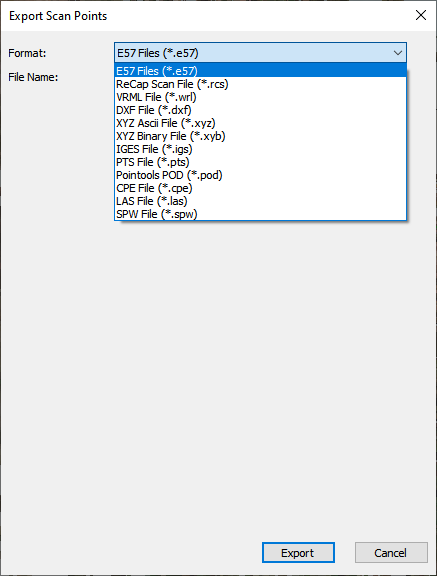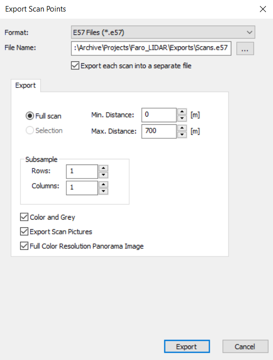
A Faro Focus 360 LIDAR scanner captures both point cloud data, and RGB color images from an integrated CMOS image sensor. The RGB image data is primarily used to colorize the point cloud samples. Additionally, the same RGB data from the original camera views can be exported from FARO Scene as high-resolution 360VR stitched panoramic images.
The following Faro Focus LIDAR scanner photos were provided by Robert Moreno of La Sociedad Espeleolgica de Puerto Rico, Inc.(SEPRI) "Speleological Society of Puerto Rico" http://sepri.org/
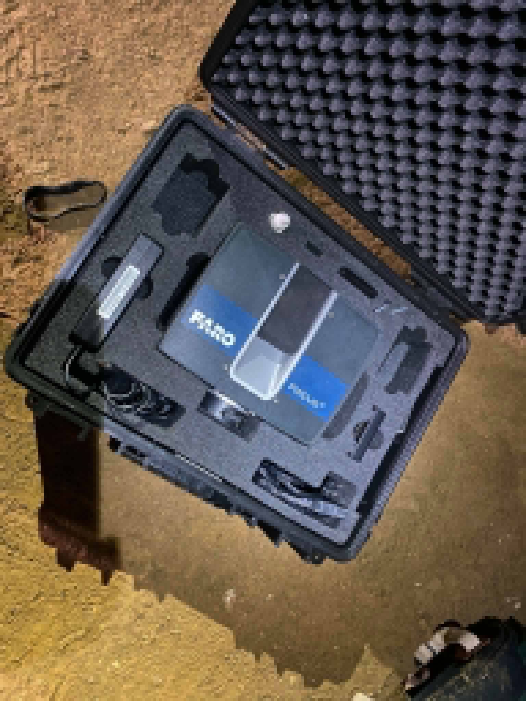
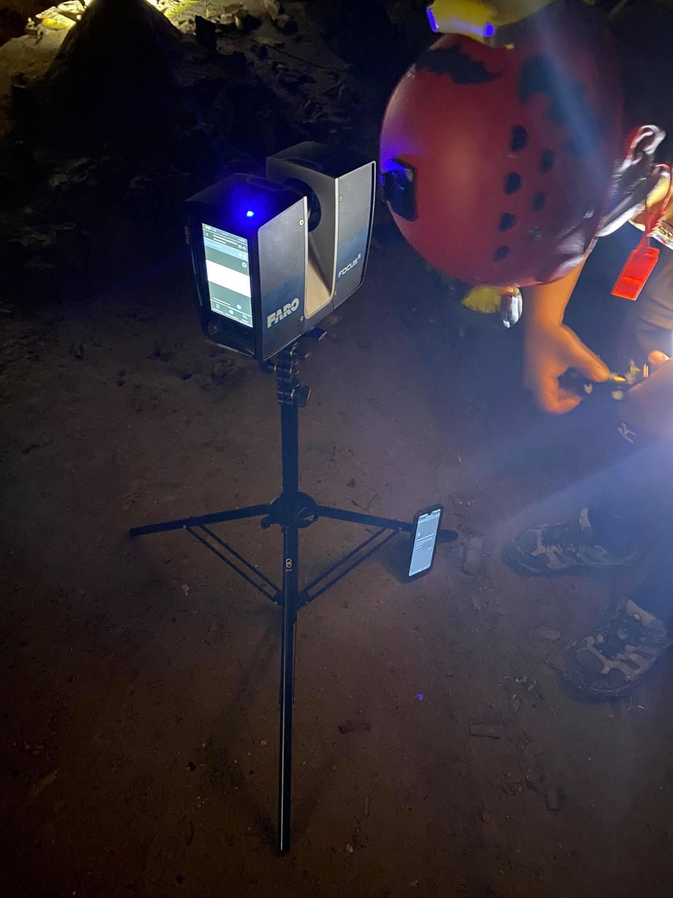
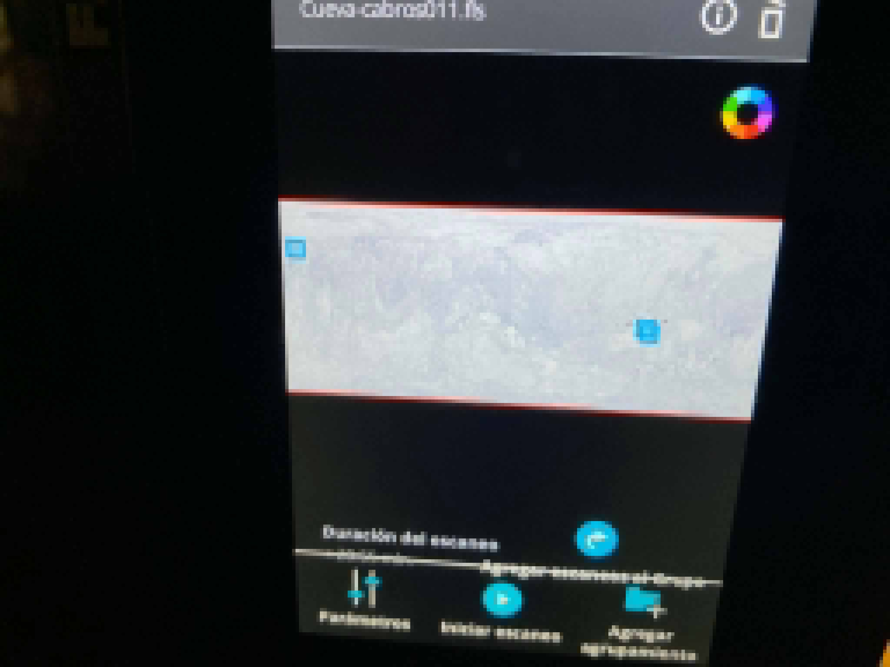
Leica Cyclone Register 360¶
Leica Cyclone Register 360
Leica Cyclone is the name for a suite of LIDAR scan processing tools. The Register 360 product has a simplified user interface that makes it convenient for a casual user to process scan data.
The Cyclone software is able to work with LIDAR data from multiple vendors including Leica and Faro. The first time you import Faro Focus LIDAR scan data into Leica Cyclone you will be asked to install the Faro SDK plugin.
Pixar OpenUSD Tools¶
Pixar OpenUSD Tools
The Pixar OpenUSD repository includes several utility tools that perform handy operations on .usd, .usdc, .usda, .usdz and .abc files. If you want access to pre-compiled versions of these USD tools, NVIDIA's Omniverse team, and the SideFX Houdini software bundle the CLI tools inside a "bin" folder.
https://github.com/PixarAnimationStudios/USD
Details on how to compile your own builds of the OpenUSD repository provided CLI tools can be read here:
The Ultimate Guide to OpenUSD Pipeline Development | Overview
USDView¶
USDView
USDView is an efficient 3D scene graph viewing tool provided by the OpenUSD repo. It is a program that makes it easy to inspect individual assets and composed USD scenes. You are able to render loaded scenes using any Hydra compatible plugin renderer that is installed on the system.
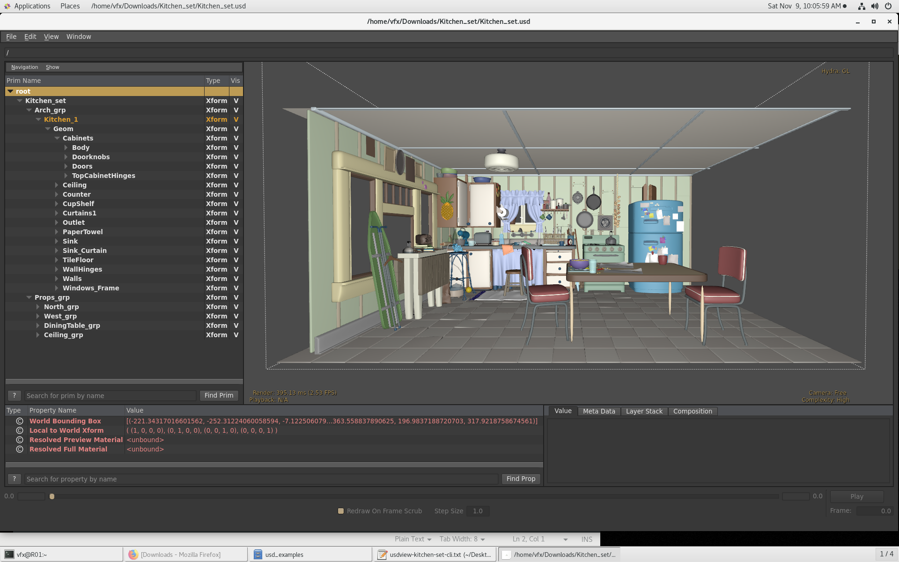
J-Cube Multiverse for Maya and Muse¶
J-Cube Multiverse for Maya and Muse
J-Cube makes the excellent Multiverse for Maya plugin, along with the standalone Muse OpenUSD file editing tools.
https://j-cube.jp/solutions/multiverse/
Kartaverse OpenUSD Tools¶
Kartaverse OpenUSD Tools
It's worth mentioning the Kartaverse KartaVR and Vonk data node toolsets unlock several additional export formats in Resolve/Fusion for volumetric data.
Export Point Cloud Script¶
Export Point Cloud Script
The KartaVR Export point cloud script works with the currently selected PointCloud3D node in the Fusion node graph.
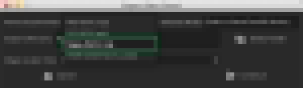
The "Export to Point Cloud" script can also be used to de-compose a Fusion FBXMesh3D loaded OBJ model into its individual vertices when the point cloud is exported.
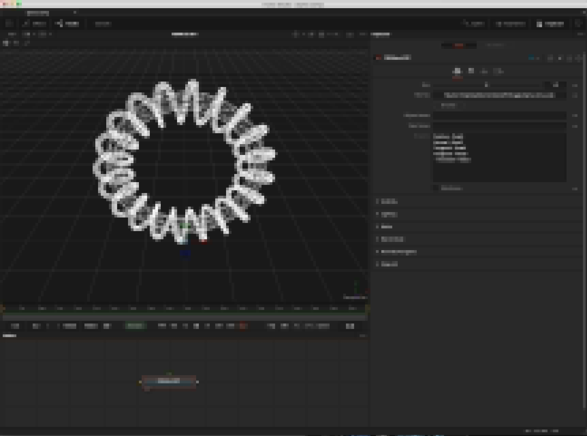
KartaVR supports .ma (Maya ASCII) based exports from Fusion 3D system PointCloud3D nodes, and OBJ meshes.
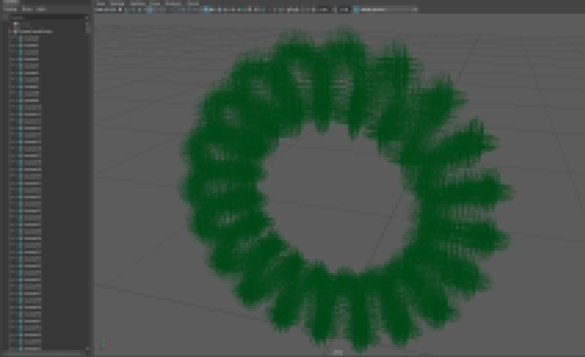
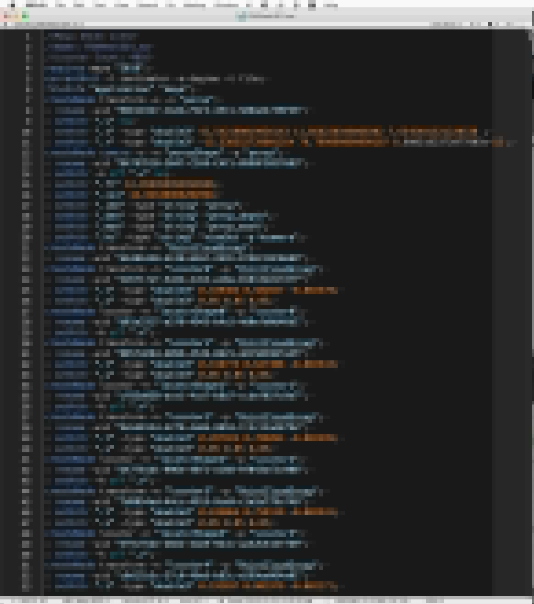
Vonk 3D Node¶
Vonk 3D Node
The Vonk data node "v3DToFile" fuse makes it possible to export the PointCloud3D node data to disk in a parametric node-based fashion. This node works in the Fusion Studio and Resolve Studio GUI.
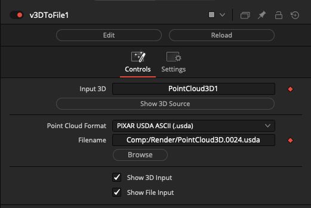
Connect a PointCloud3D node's output connection directly to the v3DToFile node input connection:
PointCloud3D.Output -> v3DToFile.Input
The "Point Cloud Format" ComboControl allows you to select the export format used. Options include: "XYZ ASCII (.xyz)", "PLY ASCII (.ply)", and "PIXAR USDA ASCII (.usda)".
The "Filename" text field supports Vonk vText based connections. This allows you to dynamically generate a filename via data node approaches.
The Filename field contents can include relative PathMap values like "Comp:/" that will be expanded at render time.
If a sub-folder is specified in the filename field, and it is missing at render time, the sub-folders will be re-created automatically when the file is saved to disk. This is helpful if you want to use per--timeline-frame numbered folders in the output filepath.
Vonk 3D Example Comp¶
Vonk 3D Example Comp
There is a Fusion example comp provided with the Vonk data nodes that shows how the v3DToFile workflow is done.
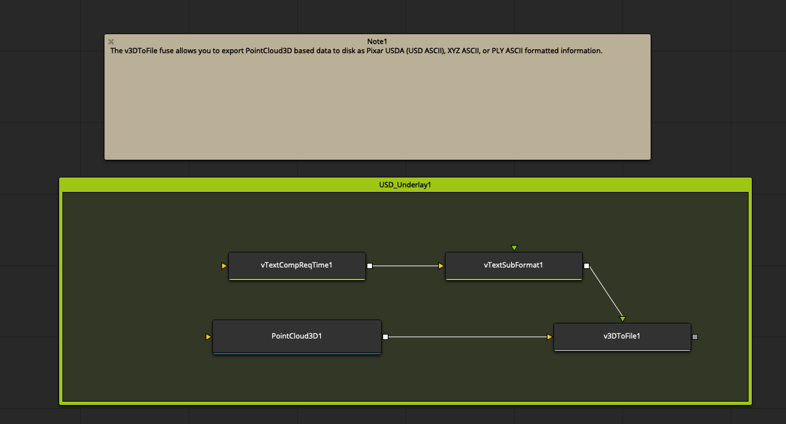
The example is located on-disk at the following PathMap location:
Reactor:/Deploy/Comps/Kartaverse/Vonk Ultra/Demo 3D/Demo 3D.comp
NVIDIA InstantNGP Deployment¶
NVIDIA InstantNGP Deployment
This is an open-source NeRF toolset for interactive neural graphics based volumetric rendering. The testbed program runs with the help of the COLMAP utility for camera registration.
https://github.com/NVlabs/instant-ngp
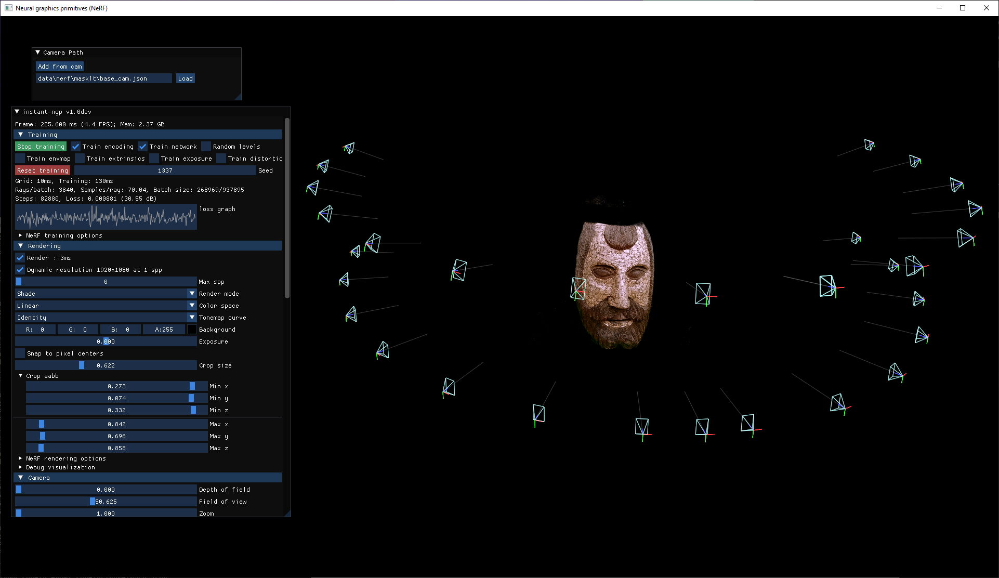
For more information:
- Kartaverse Workflows | Creating Volumetric NeRFs
- GitHub | Agisoft Metashape camera location to NERF conversion tool
NeRF Studio
For more information:
Adobe Substance 3D Painter
https://www.adobe.com/products/substance3d-painter.html
RizomUV